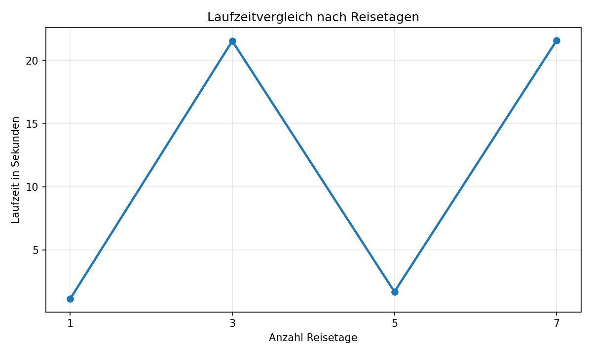
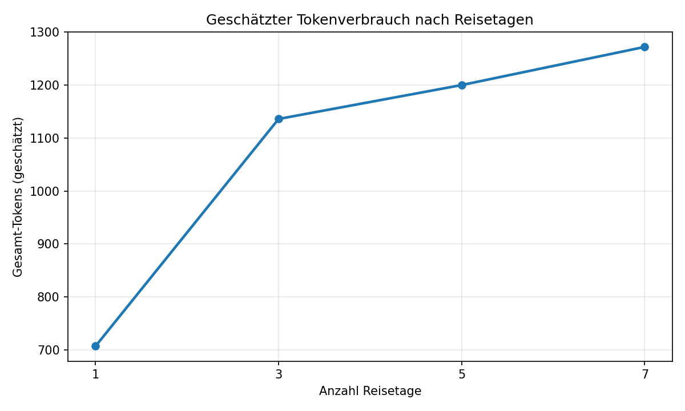
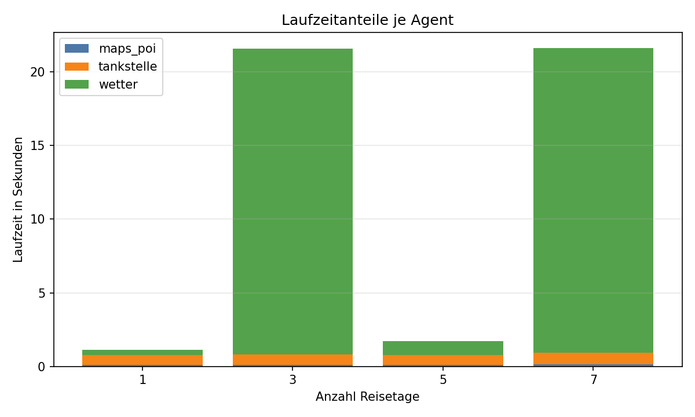
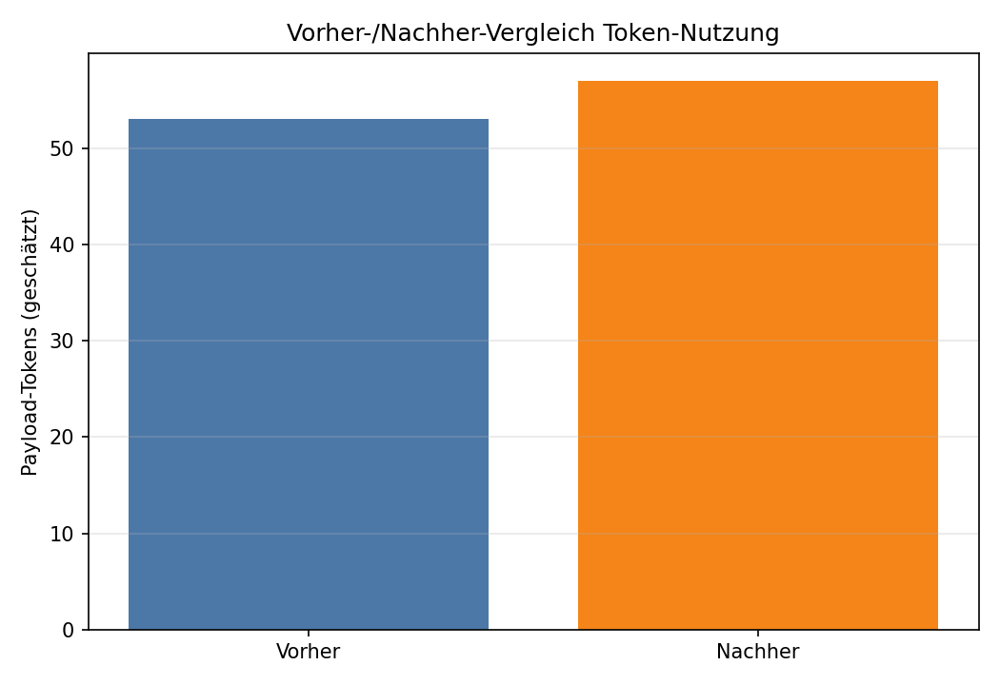
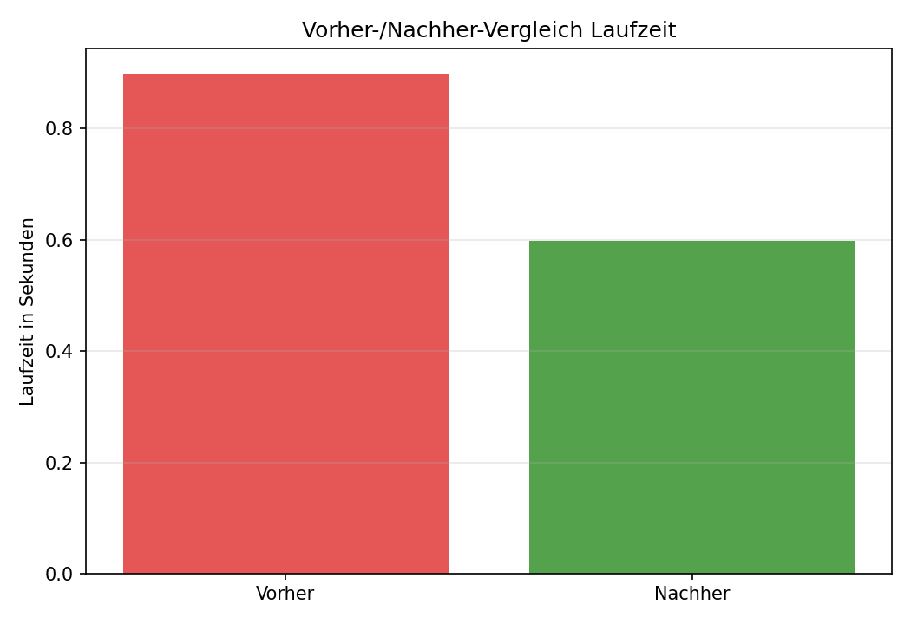

Überblick
Getestet wurde der aktuelle Orchestrator mit automatisierten Roadtrip-Szenarien für 1, 3, 5 und 7 Reisetage. Für alle Szenarien wurden dieselben Nutzereingaben verwendet; nur die Reisedauer wurde verändert.
Erhoben wurden Laufzeit, Agent-Aufrufe, Funktionsaufrufe, Agent-Laufzeiten, Eingabe- und Ausgabegrößen sowie geschätzte Tokenwerte.
Tokenhinweis: Es wurden keine echten LLM-Token gemessen. Die Werte sind geschätzt mit der Regel: ungefähr 1 Token pro 4 Zeichen.
Vorher-/Nachher-Daten aus telemetry_report.md wurden gefunden.
Messwerte
| Reisetage | Laufzeit (s) | Agent-Aufrufe | Funktionsaufrufe | Gesamt-Tokens | Input-Größe (Bytes) | Output-Größe (Bytes) | Plan-Tage | Wettertage | Status |
|---|---|---|---|---|---|---|---|---|---|
| 1 | 1.1354 | 3 | 981 | 707 geschätzt | 143 | 2074 | 1 | 1 | ok |
| 3 | 21.5733 | 3 | 745 | 1136 geschätzt | 143 | 3791 | 3 | 3 | ok |
| 5 | 1.7050 | 3 | 762 | 1200 geschätzt | 143 | 4045 | 5 | 3 | ok |
| 7 | 21.6090 | 3 | 742 | 1272 geschätzt | 143 | 4343 | 7 | 3 | ok |
Agent-Laufzeiten
| Reisetage | Agent | Laufzeit (s) | Input Bytes | Output Bytes | Status |
|---|---|---|---|---|---|
| 1 | maps_poi | 0.1070 | 96 | 890 | ok |
| 1 | wetter | 0.3504 | 142 | 811 | ok |
| 1 | tankstelle | 0.6541 | 39 | 139 | ok |
| 3 | maps_poi | 0.0926 | 96 | 2200 | ok |
| 3 | wetter | 20.7606 | 378 | 1218 | ok |
| 3 | tankstelle | 0.7171 | 39 | 139 | ok |
| 5 | maps_poi | 0.0918 | 96 | 2476 | ok |
| 5 | wetter | 0.9251 | 378 | 1196 | ok |
| 5 | tankstelle | 0.6855 | 39 | 139 | ok |
| 7 | maps_poi | 0.1581 | 96 | 2752 | ok |
| 7 | wetter | 20.6810 | 378 | 1218 | ok |
| 7 | tankstelle | 0.7669 | 39 | 139 | ok |
Diagramme





Interpretation
Bei mehr Reisetagen verändert sich die Laufzeit um 20.4736 Sekunden zwischen dem kleinsten und größten Szenario. Da externe APIs beteiligt sind, schwankt dieser Wert auch durch Netzwerk und Antwortzeiten.
Der geschätzte Tokenverbrauch verändert sich um 565 Tokens. Es handelt sich ausdrücklich um eine Schätzung über Textlänge: ungefähr 1 Token pro 4 Zeichen. Echte LLM-Tokens liegen nicht vor, weil aktuell keine LLM-API im Orchestrator genutzt wird.
Vorher-/Nachher-Daten wurden gefunden und im Report visualisiert. Der frühere Mini-Test veränderte sich um -0.3009 Sekunden.
Technische Schlussfolgerung: Der Orchestrator ist jetzt messbar und erzeugt strukturierte Frontend-Daten. Die Agent-Laufzeiten zeigen, welche Teile bei späteren Optimierungen zuerst betrachtet werden sollten.
Grenzen der Messwerte: API-Latenzen, Tagesdaten beim Wetter, Tankstellenpreise und OSRM-Fallbacks können Ergebnisse verändern. Für wissenschaftlich stabilere Messungen wären mehrere Wiederholungen und API-Mocking sinnvoll.
Funktionstest: Beispiel-Roadtrip
Dieser Abschnitt zeigt, dass der Orchestrator eine HTML-fähige Ausgabe für das Frontend erzeugt.
Nutzereingaben
- Startort: München
- Thema: Städte
- Reisetage: 3
- Kraftstoff: e5
Geplante Tagesetappen
- Tag 1: Etappe: Dresden. Plane genug Zeit für Sehenswürdigkeiten und Pausen; ca. 6 Stunden Tagesreisezeit.
- Tag 2: Etappe: Berlin. Plane genug Zeit für Sehenswürdigkeiten und Pausen; ca. 6 Stunden Tagesreisezeit.
- Tag 3: Etappe: Köln. Plane genug Zeit für Sehenswürdigkeiten und Pausen; ca. 6 Stunden Tagesreisezeit.
Wetter-Kachel
- Datenbasis: mixed
- Temperaturspanne: Zwischen 11 und 24 °C
- Wetterrisiko: hoch
- Packempfehlung: Packe Regenjacke, warme Schichten und wetterfeste Schuhe ein. Plane fuer Tag 1 eine flexible Alternative.
Tank-/Kosteninformationen
- Tankstelle: Gebrüder Neeb GmbH & Co. KG
- Preis: 1.838 €/L
- Entfernung: 9.2 km
- Adresse: Lochhamer Schlag, Gräfelfing
POI-Informationen
- Zwinger in Dresden: Barocke Schlossanlage mit Museen.
- Frauenkirche in Dresden: Wiederaufgebaute Landmarke der Stadt.
- Brandenburger Tor in Berlin: Symbol der deutschen Einheit.
- Museumsinsel in Berlin: Weltkulturerbe mit fünf Museen.
- Kölner Dom in Köln: Gotische Kathedrale und UNESCO-Weltkulturerbe.
- Rheinpromenade in Köln: Spazierwege am Fluss mit Blick auf die Altstadt.
Finale Zusammenfassung
Die Reise hat erhoehtes Wetterrisiko, besonders rund um Dresden. Die Reise enthaelt echte Vorhersagen und historische Schaetzungen.